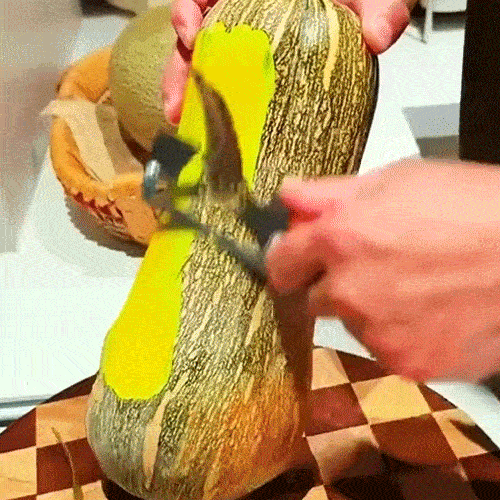
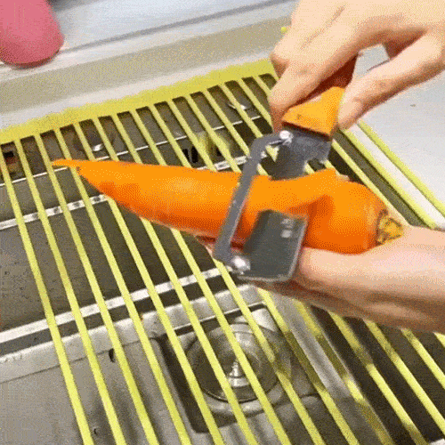

Why 47,000+ Home Cooks Threw Away Their Plastic Peelers After Discovering This "Zero-Snag" Wooden Kitchen Tool
Most peelers use cheap stamped metal with microscopic burrs and narrow gaps. The result? A phenomenon engineers call "Micro-Drag." The blade catches, peels clog the gap, and you instinctively squeeze harder. Your hand cramps. The blade cuts too deep. You waste food.

But a small workshop has engineered a solution combining Zero-Snag blade geometry with the natural grip of wood—the same material used in axes and hammers for shock absorption. Here's why over 47,000 cooks have made the switch...
1. Glides Through Tough Skins Like You're Slicing Tofu
The Wide Arched Blade uses stainless steel honed sharp enough to pass the "Tofu Test"—it can slice a paper-thin layer off soft tofu without breaking it. On your vegetables? It floats over the surface with zero downward pressure required. Pumpkin skins, potato eyes, kiwi fuzz—nothing makes it stutter.

"I used to dread peeling butternut squash for soup. This thing glided through it like butter. Took me 90 seconds instead of 10 minutes fighting with my old peeler."
2. Saves 33% More Food (And Your Grocery Budget)
Standard peelers force you to apply pressure, cutting deep into the flesh. This peeler's friction‑free geometry removes only the skin—peels so thin they're nearly translucent.

"I'm shocked how thin the peels are now. I used to see chunks of white potato in the trash. Not anymore."
3. Your Hand Actually Relaxes While You Peel
The Natural Wood Handle is 40% thicker than standard peelers and shaped to fit the palm's natural curve. Wood provides something plastic can't: "Organic-Touch" traction that actually improves when damp (moisture opens the wood grain for grip). No white-knuckle squeezing. No cramping after 5 potatoes.

"I have weak hands from arthritis. This handle is thick enough I don't have to death-grip it, and the wood doesn't slip when my hands are wet."
4. Never Clogs, Rusts, or Goes Dull
The Wide Clearance Gap is engineered so peels flow through instantly—no jams, no scraping gunk out with your fingernail. Stainless steel blade resists rust even in humid kitchens. And because the "Zero-Snag" geometry eliminates friction, the edge stays sharp for years without professional sharpening.

"I've had mine for 14 months. Still cuts like day one. My old plastic peeler was dull after 3 weeks."
5. Doubles as a Bottle Opener (Camping Hero)
The Integrated Metal Bottle Opener built into the handle base makes this a true multi-tool. Campers, van-lifers, and tailgaters report it's become their go-to: peel dinner, open drinks, store in a compact drawer. One tool, two jobs.

"Brought this on our camping trip. Peeled veggies for stew, then cracked open beers by the fire. My buddies all asked where I got it."
6. Trusted by Over 47,000+ Home Cooks Worldwide
No doctor visits for hand pain. No throwing away dull peelers every 6 months. Just effortless, professional-grade peeling—every single time.
"I'm 67 with arthritis in both hands. This is the first peeler I can use without my fingers going numb. The thick wood handle distributes pressure evenly. I actually enjoy peeling vegetables now."
* Results based on a survey of 10,000+ customers.
7. How to Use (3 Simple Steps)
Hold the thick wooden handle with a relaxed grip (no squeezing required).
Let the blade float over the produce—apply zero downward pressure.
Watch thin, uniform peels flow cleanly through the gap. Rinse under water for 3 seconds.
WHY CHOOSE THIS OVER STANDARD PEELERS?
| Features | Zero-Snag Wooden Peeler | Generic Plastic/Metal Peeler |
|---|---|---|
| Handle Grip |
|
|
| Blade Design |
|
|
| Food Waste |
|
|
| Hand Fatigue |
|
|
| Durability |
|
|
| Multi-Use |
|
|
| Aesthetics |
|
|
The Effortless Way to Meal Prep—No Snagging, No Hand-Ache, Just Pro-Level Results!
Engineered with a professional-grade swivel blade, it slices through skins as easily as a hot knife through butter. Whether you're prepping a 10lb bag of potatoes for Thanksgiving or finely shaving carrots for a salad, its natural wood grip breathes with your hand, reducing fatigue and providing clinical-level control.

UP TO 50% OFF
FOR A LIMITED TIME ONLY!
This limited-time offer is in high demand and stock is running out quickly.
GET 50% OFF NOW →Try it today with a 90-Day Money-Back Guarantee!